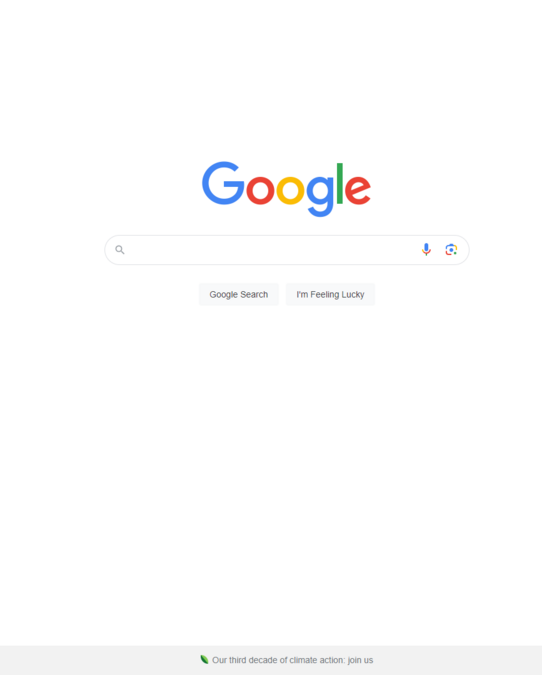
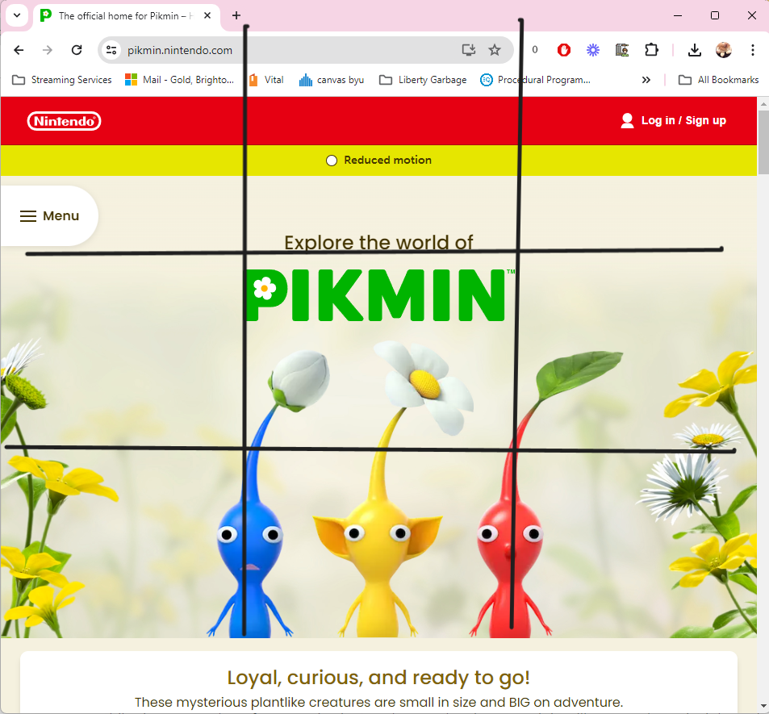
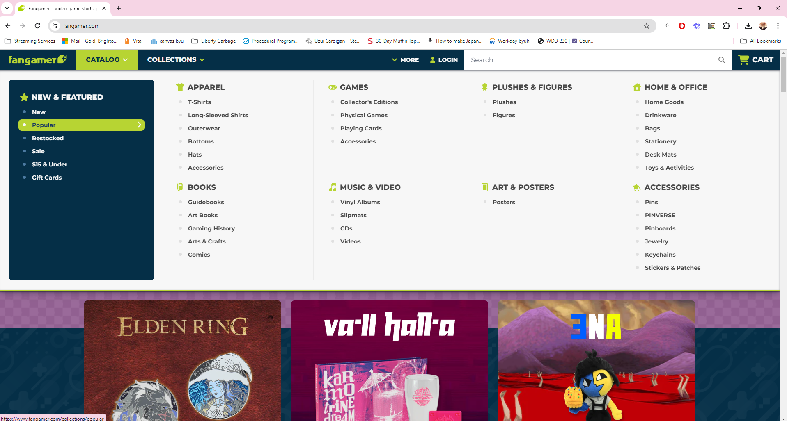

Hick's Law
Hick's law is the psychological principle that if a person has more options or stimuli, the longer they will take to make a decision. If a user has fewer options, they will make a decision more quickly.
Google exemplifies Hick's Law by providing a minimalistic design with few stimuli, allowing users to quickly focus on the primary task of searching. By reducing distractions and options, Google helps users make decisions rapidly, which emphasizes the importance of simplicity in web design.
Rule Of Thirds
Example Company - Nintendo's Pikmin Website
The rule of thirds is a design principle that suggests that an image should be divided into nine equal parts by two equally spaced horizontal lines and two equally spaced vertical lines. The important elements should be placed along these lines or their intersections.
This website demonstrates the rule of thirds in web design. If you divide the foreground image into a 3x3 grid, you'll notice the blue and red Pikmin align with the two vertical lines, while the yellow Pikmin is positioned centrally. This technique emphasizes the primary subjects, creating a good balance and visually appealing design that guides the viewer's eye.
PARC: Repetition
Repetition in a document helps unify and organize the content. Some examples can be repeating colors, shapes, or images.
Fangamer excels in using repetition in their web design. Despite having a revolving door of merchandise, they maintain their visual identity with a repeating color scheme of dark blue and neon green. The header bar, highlighted in these colors, exemplifies this repetition, helping brand recognition. Additionally, they apply the same grid layout across all merchandise pages, ensuring a uniform browsing experience that allows customers to navigate the site effortlessly.